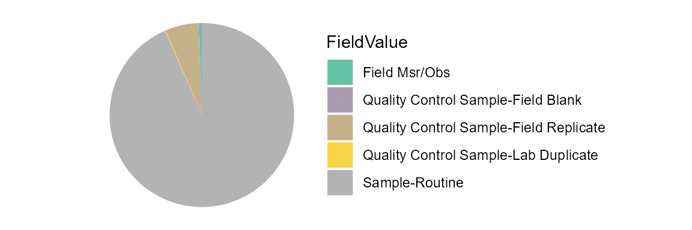

WQP Data Harmonization
Cristina Mullin
May 1, 2022
Source:vignettes/WQPDataHarmonization.Rmd
WQPDataHarmonization.RmdInstall and load packages
Install and load dependency packages. Current versions of TADA and dataRetrieval can be installed from GitHub instead of CRAN.
list.of.packages <- c("plyr","dplyr","ggplot2","RColorBrewer","Rcpp","devtools",
"data.table","grDevices","magrittr","stringr","testthat","usethis","utils","stats","rmarkdown","knitr","remotes", "tidyverse", "lubridate", "dplyr")
new.packages <- list.of.packages[!(list.of.packages %in% installed.packages()[,"Package"])]
if(length(new.packages)) install.packages(new.packages)
library(remotes)
library(dplyr)
library(ggplot2)
library(plyr)
library(RColorBrewer)
library(Rcpp)
library(data.table)
library(grDevices)
library(magrittr)
library(stringr)
library(testthat)
library(usethis)
library(utils)
library(stats)
library(rmarkdown)
library(knitr)
library(devtools)
library(tidyverse)
library(lubridate)
library(dplyr)
remotes::install_github("USGS-R/dataRetrieval", dependencies=TRUE)
remotes::install_github("USEPA/TADA", dependencies=TRUE)
library(dataRetrieval)
library(TADA)Retrieve WQP data
WQP data is retrieved and processed for compatibility with TADA. This function, TADAdataRetrieval builds on the USGS dataRetrieval package functions. It joins three WQP profiles (i.e., the station, narrow, and phys/chem), changes all data in the Characteristic, Speciation, Fraction, and Unit fields to uppercase, removes true duplicates, removes data for all non-water media types, and cleans results with special characters.
This function uses the same inputs as the dataRetrieval
readWQPdata function. readWQPdata does not
restrict the characteristics pulled from WQP. You may specify the
desired characteristics by using, for instance: ’characteristicName =
“pH”.
More details about this function can be found in the function documentation by entering the following code into the console: ?TADAdataRetrieval
Here is more information on the dataRetrieval R Package: Introduction to the dataRetrieval package General Data Import from Water Quality Portal Water Quality Portal Web Services Guide [dataRetrieval Tutorial](https://owi.usgs.gov/R/dataRetrieval.html
Water Quality Portal downloads have the same columns each time, but be aware that data are uploaded to the Water Quality Portal by individual organizations, which may or may not follow the same conventions. Data and metadata quality are not guaranteed! Make sure to carefully explore any data and make conservative quality assurance decisions where information is limited.
In this vignette, we will walk through some of the things to look for when deciding to use different organizations data from the WQP.
Tips on the WQP (https://www.waterqualitydata.us/) data retrieval filters:
statecode startDatee countycode siteid siteType CharacteristicName ActivityMediaName endDate
Tip 1) All the query filters for the WQP work as an AND but within the fields there are ORs. So for example, characteristics – if you choose pH & DO – it’s an OR. Similarly, if you choose VA and IL, it’s an OR. But the combo of fields are ANDs, such as State/VA AND Characteristic/DO”. “Characteristic” and “Characteristic Type” on the WQP also work as an AND. Tip 2) The “siteid” is a general term WQP uses to describe both Site IDs from USGS databases and Monitoring Location Identifiers (from the Water Quality Portal). Each monitoring location in the Water Quality Portal (WQP) has a unique Monitoring Location Identifier, regardless of the database from which it derives. The Monitoring Location Identifier from the WQP is the concatenated Organization Identifier plus the Site ID number. Site IDs that only include a number are only unique identifiers for monitoring locations within USGS NWIS or EPA’s WQX databases separately.
#You can edit this to define your own WQP query inputs below
TADAProfile <- TADAdataRetrieval(statecode = "UT", characteristicName = c("Ammonia", "Nitrate", "Nitrogen"), startDate = "01-01-2021")
#Alternatively, use the data.table::fread function to read in a web service call for any WQP profile.
new_fullphyschem <- data.table::fread("https://www.waterqualitydata.us/data/Result/search?countrycode=US&statecode=US%3A49&siteid=UTAHDWQ_WQX-4925610&startDateLo=01-01-2015&startDateHi=12-31-2016&mimeType=csv&zip=no&sorted=yes&dataProfile=fullPhysChem&providers=NWIS&providers=STEWARDS&providers=STORET")Review all column names in the TADA Profile
colnames(TADAProfile)
#> [1] "OrganizationIdentifier"
#> [2] "OrganizationFormalName"
#> [3] "ActivityIdentifier"
#> [4] "ActivityTypeCode"
#> [5] "ActivityMediaName"
#> [6] "ActivityMediaSubdivisionName"
#> [7] "ActivityStartDate"
#> [8] "ActivityStartTime.Time"
#> [9] "ActivityStartTime.TimeZoneCode"
#> [10] "ActivityEndDate"
#> [11] "ActivityEndTime.Time"
#> [12] "ActivityEndTime.TimeZoneCode"
#> [13] "ActivityDepthHeightMeasure.MeasureValue"
#> [14] "ActivityDepthHeightMeasure.MeasureUnitCode"
#> [15] "ActivityDepthAltitudeReferencePointText"
#> [16] "ActivityTopDepthHeightMeasure.MeasureValue"
#> [17] "ActivityTopDepthHeightMeasure.MeasureUnitCode"
#> [18] "ActivityBottomDepthHeightMeasure.MeasureValue"
#> [19] "ActivityBottomDepthHeightMeasure.MeasureUnitCode"
#> [20] "ProjectIdentifier"
#> [21] "ActivityConductingOrganizationText"
#> [22] "MonitoringLocationIdentifier"
#> [23] "ActivityCommentText"
#> [24] "SampleAquifer"
#> [25] "HydrologicCondition"
#> [26] "HydrologicEvent"
#> [27] "SampleCollectionMethod.MethodIdentifier"
#> [28] "SampleCollectionMethod.MethodIdentifierContext"
#> [29] "SampleCollectionMethod.MethodName"
#> [30] "SampleCollectionEquipmentName"
#> [31] "ResultDetectionConditionText"
#> [32] "CharacteristicName"
#> [33] "ResultSampleFractionText"
#> [34] "ResultMeasureValue"
#> [35] "ResultMeasureValue.Original"
#> [36] "TADA.ResultMeasureValue.Flag"
#> [37] "ResultMeasure.MeasureUnitCode"
#> [38] "MeasureQualifierCode"
#> [39] "ResultStatusIdentifier"
#> [40] "StatisticalBaseCode"
#> [41] "ResultValueTypeName"
#> [42] "ResultWeightBasisText"
#> [43] "ResultTimeBasisText"
#> [44] "ResultTemperatureBasisText"
#> [45] "ResultParticleSizeBasisText"
#> [46] "PrecisionValue"
#> [47] "ResultCommentText"
#> [48] "USGSPCode"
#> [49] "ResultDepthHeightMeasure.MeasureValue"
#> [50] "ResultDepthHeightMeasure.MeasureUnitCode"
#> [51] "ResultDepthAltitudeReferencePointText"
#> [52] "SubjectTaxonomicName"
#> [53] "SampleTissueAnatomyName"
#> [54] "ResultAnalyticalMethod.MethodIdentifier"
#> [55] "ResultAnalyticalMethod.MethodIdentifierContext"
#> [56] "ResultAnalyticalMethod.MethodName"
#> [57] "MethodDescriptionText"
#> [58] "LaboratoryName"
#> [59] "AnalysisStartDate"
#> [60] "ResultLaboratoryCommentText"
#> [61] "DetectionQuantitationLimitTypeName"
#> [62] "DetectionQuantitationLimitMeasure.MeasureValue"
#> [63] "DetectionLimitMeasureValue.Original"
#> [64] "TADA.DetectionLimitMeasureValue.Flag"
#> [65] "DetectionQuantitationLimitMeasure.MeasureUnitCode"
#> [66] "PreparationStartDate"
#> [67] "ProviderName"
#> [68] "ActivityStartDateTime"
#> [69] "ActivityEndDateTime"
#> [70] "MonitoringLocationName"
#> [71] "MonitoringLocationTypeName"
#> [72] "MonitoringLocationDescriptionText"
#> [73] "HUCEightDigitCode"
#> [74] "DrainageAreaMeasure.MeasureValue"
#> [75] "DrainageAreaMeasure.MeasureUnitCode"
#> [76] "ContributingDrainageAreaMeasure.MeasureValue"
#> [77] "ContributingDrainageAreaMeasure.MeasureUnitCode"
#> [78] "LatitudeMeasure"
#> [79] "LongitudeMeasure"
#> [80] "SourceMapScaleNumeric"
#> [81] "HorizontalAccuracyMeasure.MeasureValue"
#> [82] "HorizontalAccuracyMeasure.MeasureUnitCode"
#> [83] "HorizontalCollectionMethodName"
#> [84] "HorizontalCoordinateReferenceSystemDatumName"
#> [85] "VerticalMeasure.MeasureValue"
#> [86] "VerticalMeasure.MeasureUnitCode"
#> [87] "VerticalAccuracyMeasure.MeasureValue"
#> [88] "VerticalAccuracyMeasure.MeasureUnitCode"
#> [89] "VerticalCollectionMethodName"
#> [90] "VerticalCoordinateReferenceSystemDatumName"
#> [91] "CountryCode"
#> [92] "StateCode"
#> [93] "CountyCode"
#> [94] "AquiferName"
#> [95] "LocalAqfrName"
#> [96] "FormationTypeText"
#> [97] "AquiferTypeName"
#> [98] "ConstructionDateText"
#> [99] "WellDepthMeasure.MeasureValue"
#> [100] "WellDepthMeasure.MeasureUnitCode"
#> [101] "WellHoleDepthMeasure.MeasureValue"
#> [102] "WellHoleDepthMeasure.MeasureUnitCode"
#> [103] "MethodSpecificationName"
#> [104] "ProjectName"
#> [105] "ProjectDescriptionText"
#> [106] "SamplingDesignTypeCode"
#> [107] "QAPPApprovedIndicator"
#> [108] "QAPPApprovalAgencyName"
#> [109] "ProjectFileUrl"
#> [110] "ProjectMonitoringLocationWeightingUrl"Depth unit conversions
Converts depth units to a consistent unit.
ActivityDepthHeightMeasure.MeasureValue provides depth information. This is a crucial column for lake data but less often for river data.
Function checks dataset for depth profile data. Where depth profile columns are populated, the function appends ‘Conversion Factor’ columns and populates those columns based on the original unit (MeasureUnitCode columns) and the target unit, which is defined in the ‘unit’ argument. A ‘Depth Target Unit’ column is also appended, indicating the unit all selected depth data is converted to. When transform = FALSE, the output includes all ‘Conversion Factor’ columns and the ‘Depth Target Unit’ column. When transform = TRUE, the output includes converted depth data and the ‘Depth Target Unit’ column, which acts as a flag indicating which rows have been converted. Default is transform = TRUE.
The depth profile function can harmonize the depth units across all the following fields (or only a specific one): “ActivityDepthHeightMeasure”, “ActivityTopDepthHeightMeasure”, “ActivityBottomDepthHeightMeasure”, “ResultDepthHeightMeasure”). The default is all.
Allowable values for ‘unit’ are either ‘m’ (meter), ‘ft’ (feet), or ‘in’ (inch). ‘unit’ accepts only one allowable value as an input. Default is unit = “m”.
See additional function documentation for additional function options by entering the following code in the console: ?DepthProfileData
#converts all depth profile data to meters
TADAProfileClean1 <- DepthProfileData(TADAProfile, unit = "m", transform = TRUE)Result unit conversions
Converts all results to WQX target units. WQX target units are pulled from the MeasureUnit domain table: https://cdx2.epa.gov/wqx/download/DomainValues/MeasureUnit.CSV
See additional function documentation for additional function options by entering the following code in the console: ?WQXTargetUnits
#Converts all results to WQX target units
TADAProfileClean2 <- WQXTargetUnits(TADAProfileClean1, transform = TRUE)Statistically aggregated data
Checks for and removes statistically aggregated high freqeuncy (i.e., continuous) data, if present.
The Water Quality Portal (WQP) is not designed to store high-frequency sensor data. However, sometimes data providers choose to aggregate their continuous data and submit it to WQP as one value. This type of data may not be suitable for integration with discrete water quality data for assessments. Therefore, this function uses metadata submitted by data providers to flags rows with aggregated continuous data. This is done by flagging results where the ResultDetectionConditionText = “Reported in Raw Data (attached)”. When clean = TRUE, rows with aggregated continuous data are removed from the dataset and no column will be appended. Default is clean = TRUE.
See function documentation for additional function options by entering the following code in the console: ?DepthProfileData
TADAProfileClean3 <- AggregatedContinuousData(TADAProfileClean2, clean = TRUE)
#> [1] "The dataset does not contain aggregated continuous data."WQX QAQC Service Result Flags
Run the following result functions to address invalid method, fraction, speciation, and unit metadata by characteristic. The default is Clean=TRUE, which will remove invalid results. You can change this to clean=FALSE to flag results, but not remove them.
See documentation for more details: ?InvalidMethod ?InvalidSpeciation ?InvalidResultUnit ?InvalidFraction
TADAProfileClean4 <- InvalidMethod(TADAProfileClean3, clean = TRUE)
TADAProfileClean5 <- InvalidFraction(TADAProfileClean4, clean = TRUE)
#> [1] "All data is valid, therefore the function cannot be applied."
TADAProfileClean6 <- InvalidSpeciation(TADAProfileClean5, clean = TRUE)
TADAProfileClean7 <- InvalidResultUnit(TADAProfileClean6, clean = TRUE)WQX national upper and lower thresholds
Run the following code to flag or remove results that are above or below the national upper and lower bound for each characteristic and unit combination. The default is clean=TRUE, but you can change this to only flag results if desired. Results will be flagged, but not removed, when clean=FALSE.
TADAProfileClean8 <- AboveNationalWQXUpperThreshold(TADAProfileClean7, clean = TRUE)
TADAProfileClean9 <- BelowNationalWQXUpperThreshold(TADAProfileClean8, clean = TRUE)Potential duplicates
Sometimes multiple organizations submit the exact same data to Water Quality Portal (WQP), which can affect water quality analyses and assessments. This function checks for and identifies data that is identical in all fields excluding organization-specific and comment text fields. Each pair or group of potential duplicate rows is flagged with a unique ID. When clean = TRUE, the function retains the first occurrence of each potential duplicate in the dataset. Default is clean = TRUE.
TADAProfileClean10 <- PotentialDuplicateRowID(TADAProfileClean9)Invalid coordinates
Function identifies and flags invalid coordinate data. When clean_outsideUSA = FALSE and clean_imprecise = FALSE, a column will be appended titled “TADA.InvalidCoordinates” with the following flags (if relevant to dataset). If the latitude is less than zero, the row will be flagged with “LAT_OutsideUSA”. If the longitude is greater than zero AND less than 145, the row will be flagged as “LONG_OutsideUSA”. If the latitude or longitude contains the string, “999”, the row will be flagged as invalid. Finally, precision can be measured by the number of decimal places in the latitude and longitude provided. If either does not have any numbers to the right of the decimal point, the row will be flagged as “Imprecise”.
TADAProfileClean11 <- InvalidCoordinates(TADAProfileClean10, clean_outsideUSA = FALSE, clean_imprecise = FALSE)Review QAPP information
Check data for an approved QAPP
This function checks to see if there is any information in the column “QAPPApprovedIndicator”. Some organizations submit data for this field to indicate if the data produced has an approved Quality Assurance Project Plan (QAPP) or not. In this field, Y indicates yes, N indicates no.
This function has two default inputs: clean = TRUE and cleanNA = FALSE. These defaults remove rows of data where the QAPPApprovedIndicator equals “N”. Users could alternatively remove both N’s and NA’s using the inputs clean = TRUE and cleanNA = TRUE. If both clean = FALSE and cleanNA = FALSE, the function will not do anything.
TADAProfileClean12 <- QAPPapproved(TADAProfileClean11, clean = TRUE, cleanNA = FALSE)Check to see if a QAPP Doc is Available
This function checks data submitted under the “ProjectFileUrl” column to determine if a QAPP document is available to review. When clean = FALSE, a column will be appended to flag results that do have an associated QAPP document URL provided. When clean = TRUE, rows that do not have an associated QAPP document are removed from the dataset and no column will be appended. This function should only be used to remove data if an accompanying QAPP document is required to use data in assessments.
TADAProfileClean13 <- QAPPDocAvailable(TADAProfileClean12, clean = FALSE)
#> Warning in QAPPDocAvailable(TADAProfileClean12, clean = FALSE): The dataset does
#> not contain QAPP document url data.Filter data by field
In this section a TADA user will want to review the unique values in specific fields and may choose to remove data with particular values.
To start, review the list of fields and the number of unique values in each field.
FilterFields(TADAProfileClean13)
#> FieldName Count
#> 1 OrganizationFormalName 4
#> 2 ActivityTypeCode 5
#> 3 ActivityMediaName 1
#> 4 ActivityMediaSubdivisionName 4
#> 5 ActivityCommentText 2
#> 6 HydrologicCondition 8
#> 7 HydrologicEvent 4
#> 8 CharacteristicName 2
#> 9 MeasureQualifierCode 1
#> 10 SampleTissueAnatomyName 1
#> 11 LaboratoryName 8
#> 12 DetectionQuantitationLimitTypeName 4
#> 13 MonitoringLocationTypeName 6
#> 14 ProjectName 3Next, choose a field from the list to see the unique values in that field, as well as the number of times each value appears in the dataset. We’ll start with ActivityTypeCode.
Here is a list of other fields to review: 1. ResultCommentText often has details relating to additional QA. 2. MeasureQualifierCode Contains information about data flags 3. Other codes may designate suspect data or other flags which may be described in detail in ResultLaboratoryCommentText or another column
FilterFieldReview("ActivityTypeCode", TADAProfileClean13)
#> FieldValue Count
#> 5 Sample-Routine 799
#> 3 Quality Control Sample-Field Replicate 50
#> 1 Field Msr/Obs 4
#> 2 Quality Control Sample-Field Blank 1
#> 4 Quality Control Sample-Lab Duplicate 1The ActivityTypeCode field has four unique values – “Sample-Routine”, “Quality Control Sample-Field Replicate”, “Field Msr/Obs”, and “Quality Control Sample-Field Blank.” In this example we want to remove quality control values in the ActivityTypeCode field, therefore, we’ll specify that we want to remove the “Quality Control Sample-Field Replicate” and “Quality Control Sample-Field Blank” values in the ActivityTypeCode field.
TADAProfileClean14 <- dplyr::filter(TADAProfileClean13, !(ActivityTypeCode %in% c("Quality Control Sample-Field Replicate", "Quality Control Sample-Field Blank")))We’ve completed our review of the ActivityTypeCode field.
Let’s move on to a different field and see if there are any values that we want to remove – we’ll look at the values in the ResultStatusIdentifier field.
FilterFieldReview("ActivityMediaSubdivisionName", TADAProfileClean14)#> FieldValue Count
#> 3 Surface Water 677
#> 2 Groundwater 106
#> 1 Bulk deposition 1The ActivityMediaSubdivisionName field has two unique values, “Surface Water” and “Groundwater.” In this example we want to remove the “Groundwater” values.
Filter data by field, subset by parameter
In this section a TADA user will want to select a parameter, review the unique values associated with that parameter in specific fields, and choose to remove particular values.
To start, review the list of parameters in the dataset. (The list is sorted from highest to lowest counts. Only the first few rows are displayed to save space on the page)
FilterParList(TADAProfileClean15)
#> FieldValue Count
#> 1 NITRATE 641
#> 2 NITROGEN 57Next, select a parameter. Let’s explore the fields associated with Nitrogen:
FilterParFields(TADAProfileClean15, "NITROGEN")
#> FieldName Count
#> 1 ActivityTypeCode 1
#> 2 ActivityMediaName 1
#> 3 ActivityMediaSubdivisionName 1
#> 4 ActivityCommentText 1
#> 5 HydrologicCondition 6
#> 6 HydrologicEvent 1
#> 7 SampleCollectionMethod.MethodIdentifier 5
#> 8 SampleCollectionMethod.MethodIdentifierContext 1
#> 9 SampleCollectionMethod.MethodName 5
#> 10 SampleCollectionEquipmentName 5
#> 11 ResultSampleFractionText 1
#> 12 ResultMeasure.MeasureUnitCode 2
#> 13 MeasureQualifierCode 1
#> 14 ResultStatusIdentifier 2
#> 15 ResultValueTypeName 1
#> 16 ResultWeightBasisText 1
#> 17 ResultTemperatureBasisText 1
#> 18 ResultParticleSizeBasisText 1
#> 19 ResultCommentText 2
#> 20 ResultAnalyticalMethod.MethodIdentifier 1
#> 21 ResultAnalyticalMethod.MethodIdentifierContext 1
#> 22 ResultAnalyticalMethod.MethodName 1
#> 23 MethodDescriptionText 1
#> 24 LaboratoryName 1
#> 25 ResultLaboratoryCommentText 5
#> 26 DetectionQuantitationLimitTypeName 1
#> 27 MonitoringLocationTypeName 1Selecting a parameter generates the list below, which is subset by the selected parameter, of fields and the number of unique values in each field.
Then choose a field from the list. In this example we’ll remove certain values from the HydrologicEvent field.
FilterParFieldReview("HydrologicEvent", TADAProfileClean15, "NITROGEN")
#> FieldValue Count
#> 1 Routine sample 57The HydrologicEvent field has three unique values. In this example we want to remove samples collected during “Storm” events. Therefore, we’ll specify that we want to remove rows where the CharacteristicName is “NITROGEN” and the HydrologicEvent field is “Storm.”
Transform Characteristic, Speciation, and Unit values to TADA Standards
The HarmonizeRefTable function generates a harmonization reference table that is specific to the input dataset. Users can review how their input data relates to standard TADA values for CharacteristicName, ResultSampleFractionText, MethodSpecicationName, and ResultMeasure.MeasureUnitCode and they can optionally edit the reference file to meet their needs. The download argument can be used to save the harmonization file to your current working directory when download = TRUE, the default is download = FALSE.
The HarmonizeData function then compares the input dataset to the TADA Harmonization Reference Table. The purpose of the function is to make similar data consistent and therefore easier to compare and analyze. Optional outputs include: 1) the dataset with Harmonization columns appended, 2) the datset with CharacteristicName, ResultSampleFractionText, MethodSpecificationName, and ResultMeasure.MeasureUnitCode converted to TADA standards or 3) the four fields converted with most Harmonization Reference Table columns appended. Default is transform = TRUE and flag = TRUE.
Here are some examples of how the HarmonizeData function can be used: 1. ResultSampleFractionText specifies forms of constituents. In some cases, a single CharacteristicName will have both “Total” and “Dissolved” forms specified, which should not be combined. In these cases, each CharacteristicName and ResultSampleFractionText combination is given a different identifier. This identifier can be used later on to identify comparable data groups for calculating statistics and creating figures for each combination. 2. Some variables have different names but represent the same constituent (e.g., “Total Kjeldahl nitrogen (Organic N & NH3)” and “Kjeldahl nitrogen”). The HarmonizeData function gives a consistent name (and identifier) to synonyms.
UniqueHarmonizationRef <- HarmonizationRefTable(TADAProfileClean16, download = FALSE)
TADAProfileClean17 <- HarmonizeData(TADAProfileClean16, ref = UniqueHarmonizationRef, transform = TRUE, flag = TRUE)